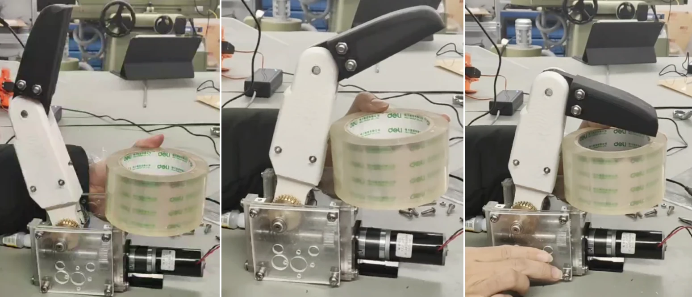
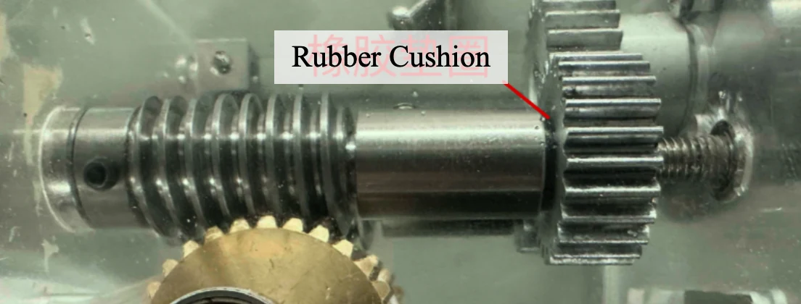
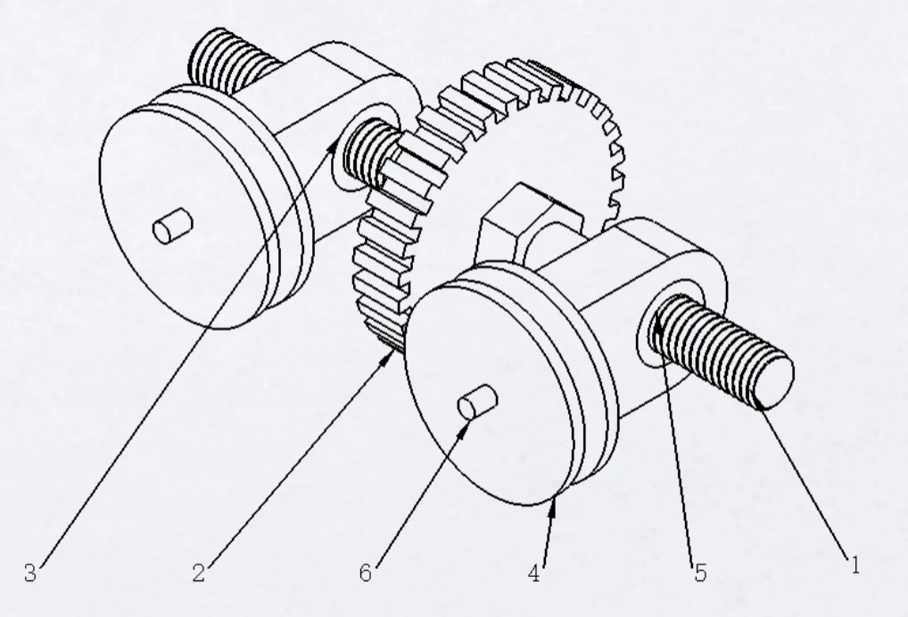

<!doctype html>
<html lang="en">
<head>
  <meta charset="utf-8">
  <meta name="viewport" content="width=device-width, initial-scale=1">
  <meta name="description" content="Seven-Degree-of-Freedom Underactuated Gripper">
  <meta name="theme-color" content="#fafbf8">
  <title>Seven-Degree-of-Freedom Underactuated Gripper — Yiwen Gao</title>
  <link rel="icon" href="icon.png" type="image/png">
  <link rel="stylesheet" href="style.css">
</head>
<body>
  <a href="#main" class="skip">Skip to content</a>
  <header class="site-header">
    <div class="wrap header-inner">
      <a class="brand" href="index.html">Yiwen Gao</a>
      <nav aria-label="Main navigation"><a href="index.html">Projects</a><a href="about.html">About</a><a href="cv.html">CV</a></nav>
    </div>
  </header>
  <main id="main" class="wrap">
  <article class="project portfolio-project">
    <a class="back" href="index.html"><span aria-hidden="true">←</span> All projects</a>
    <header class="page-head"><h1>Seven-Degree-of-Freedom Underactuated Gripper</h1><p class="project-byline">Yiwen Gao, Juntong Zhou, Haoning Yu, Ziyue Wang and Weixing Chen (Supervisor)</p></header>
    <figure class="project-figure main-figure"><a href="underactuated-finger.webp"></a><figcaption>Figure 12: One finger of the 7-DoF Underactuated Gripper Prototype</figcaption></figure><section class="project-section"><p>We designed and fabricated a seven-degree-of-freedom, three-finger gripper. One degree of freedom is used to adjust the angle between two of the fingers, while the remaining six degrees of freedom are evenly distributed among the three fingers. Each finger consists of three segments: the lower segment (transparent part) houses the driving mechanism and has no degree of freedom, while the middle (white part) and upper (black part) segments serve as the gripping actuators.</p><h2>Underactuated Control Principle</h2><p>The mechanism employs a differential gear system (For details, please refer to the next section 5.2). If the upper segment contacts the object first, the motor shuts down immediately once it reaches the preset torque. If the middle segment makes contact first, the motor will stop applying torque only to the middle segment while maintaining the torque output to the upper segment.</p><figure class="project-figure "><a href="underactuated-sequence.webp"></a><figcaption>Figure 13: Sequential illustration of the gripping process</figcaption></figure></section><section class="project-section"><h2 id="differential-gear-system">Differential Gear System</h2><figure class="project-figure "><a href="underactuated-gears.webp"></a><figcaption>Figure 14: Top view of the gear system (left) and a closer view of the custom shaft (right)</figcaption></figure><p>As shown in the figure (left), the motor drives two completely independent gear systems. The gear system in the upper half of the figure drives the upper segment, while the other gear system drives the middle segment. Clearly, the key to ensuring that the middle segment loses driving force after making contact with the object lies within the gear system in the upper half of the figure. This will be explained in detail in the next section 5.3.</p></section><section class="project-section"><h2 id="mechanism">Mechanism of Middle Segment Losing Driving Force After Being Stalled</h2><figure class="project-figure "><a href="underactuated-shaft.webp"></a><figcaption>Figure 15: Main shaft</figcaption></figure><p>The transmission shaft of the middle segment mechanism, as shown in the figure above, consists of three components: the main shaft, the gear, and the rubber cushion. The left half of the main shaft is machined into a worm shaft structure, while the right half is machined with external threads to match with the internally threaded gear. During assembly, the rubber cushion is first slid onto the right side of the main shaft, then the gear is mounted, utilizing the elasticity of the rubber cushion to apply a preload force of Q.</p><p>To loosen the tightly preloaded gear, a loosening torque M′ is required. (The derivation of M′ is omitted.)</p><p>During normal transmission, the motor applies a driving torque T to the gear, which is less than the loosening torque M′ of the gear (T &lt; M′). The gear drives the main shaft to rotate through the frictional torque. Consequently, the worm on the left half of the main shaft also rotates and transfers force to the worm pulley of the middle segment. Since the worm pulley is fixed to the middle segment, the middle segment begins to rotate under the applied force.</p><p>When the middle segment touches and clamps the object, it becomes stalled. According to the characteristics of the motor, at this moment, the motor applies a driving torque greater than the loosening torque M′. As a result, the gear loosens around the threads and no longer transmits torque to the drive shaft. Meanwhile, the upper segment continues to operate normally until it also touches and clamps the object. At this point, the gripper successfully adapts to the shape of the object.</p></section><section class="project-section"><h2>Upper Segment Transmission and Tensioning Mechanism</h2><p>The upper segment employs a steel cable transmission. Given the common issues of slipping and creep in steel cable transmissions, we have implemented two methods to address these problems.</p><p><strong>Slipping Problem:</strong> To solve the slipping problem, since the two pulleys in the cable-driven trans￾mission system have an angle of rotation not exceeding 180°, a dual-steel cable transmission method is used. The ends of the cables are fixed within the pulleys, eliminating reliance on friction.</p><p><strong>Creep Problem:</strong> Creep refers to the slow, permanent deformation of materials under constant stress, often leading to dimensional changes over time. This phenomenon may introduce significant errors in transmission as it progresses. To address this issue, I have designed a bidirectional tensioning device, whose tension can be manually adjusted. Below is the ballooned drawing for the tensioning device.</p><figure class="project-figure portrait-figure"><a href="underactuated-tensioner.webp"></a><figcaption>Figure 16: Ballooned drawing of the Bidirectional Tensioning Device</figcaption></figure><ul><li><strong>Part 1:</strong> The double-headed stud, with bearings at both ends, can effectively fix the part to the outer shell of the middle segment. The threads on either side of the stud rotate in opposite directions to achieve screw drive motion in opposite directions. The center of the stud is a regular hexagonal prism to facilitate the circumferential fixing of the adjustment pulley.</li><li><strong>Part 2:</strong> Adjustment pulley (3D printed).</li><li><strong>Part 3:</strong> The tension pulley connecting piece, also 3D printed, allows for the control of the tension pulley’s position via the double-headed stud.</li><li><strong>Part 4:</strong> The tension pulley connecting piece, also 3D printed, allows for the control of the tension pulley’s position via the double-headed stud.</li><li><strong>Part 5:</strong> The embedded circular nut, avoiding threading on the 3D printed Part 3.</li><li><strong>Part 6:</strong> The tension pulley axle, which runs through Part 4. There is an excess length on both sides of the axle. One side fixes the tension pulley to Part 3 (via rolling bearings), while the other side fits into the lateral guiding groove of the shell. This design ensures that Parts 3, 4, 5, and 6 move only axially along the double-headed stud and do not rotate uncontrollably.</li></ul><p>Below are the model and photos of the tensioning device.</p><figure class="project-figure "><a href="underactuated-built.webp"></a><figcaption>Figure 17: Model and photos of the tensioning device</figcaption></figure></section>
    <section class="project-section" aria-labelledby="gripper-videos">
      <h2 id="gripper-videos">Design and Prototype Videos</h2>
      <p>The first video shows the gripper's CAD assembly and its motion.</p>
      <video controls playsinline preload="metadata" class="project-video" aria-label="CAD animation of the seven-degree-of-freedom underactuated gripper">
        <source src="underactuated-cad.mp4" type="video/mp4">
        <a href="underactuated-cad.mp4">Download the CAD video</a>
      </video>
      <p>The second video shows the fabricated gripper and its physical motion.</p>
      <video controls playsinline preload="metadata" class="project-video portrait-video" aria-label="Physical prototype of the seven-degree-of-freedom underactuated gripper">
        <source src="underactuated-prototype.mp4" type="video/mp4">
        <a href="underactuated-prototype.mp4">Download the prototype video</a>
      </video>
    </section>
    <div class="project-next">
      <a href="index.html">← All projects</a>
      <a href="biomimetic-swimmer.html">Next: An Experimental Validation of Resistive Force Theory using a 3D-Printed E. coli Biomimetic Swimmer →</a>
    </div>
  </article></main>
  <footer class="wrap footer"><span>© 2026 Yiwen Gao</span><a href="mailto:gyiwen618@gmail.com">Email <span aria-hidden="true">↗</span></a></footer>
</body>
</html>
